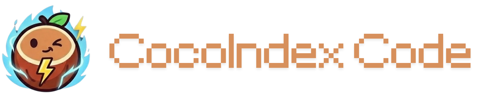
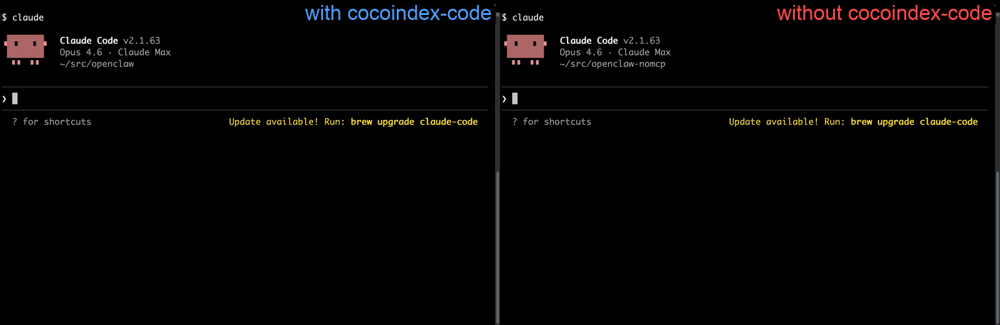

CocoIndex Code
把代码搜索从“找名字”升级成“找意图”
这是一个面向代码库与 coding agent 的超轻量代码搜索 CLI：基于 AST 做语义检索，默认强调“零配置、1 分钟上手、为 agent 节省 70% token”，并同时提供 Skill 与 MCP 两条接入路径。


项目一句话
给代码库做“能理解语义”的搜索层
CocoIndex Code 的核心价值不是补一个 grep，而是让 agent 在陌生仓库里按功能、流程、实现意图去找代码，减少手动翻目录和硬记符号名的成本。
面向 coding agent，目标是节省 token
官方 README 明确把“节省 70% token”作为卖点：先把相关片段搜准，再把更少的上下文喂给 Claude / Codex / Cursor 这类工具。
它是搜索引擎，不是完整 IDE
它更像一个给 agent 和 CLI 服务的检索层：初始化、建索引、搜索、状态诊断都在 ccc 命令里，适合接到现有工作流，而不是替代编辑器本身。
三条接入路径
把“会搜代码”交给 coding agent 自己判断
README 把 Skill 作为首选：`npx skills add cocoindex-io/cocoindex-code` 后，agent 可以自动决定何时需要语义搜索，不必手动反复运行初始化与搜索命令。
把 ccc 暴露成标准工具接口
适合已经接了 MCP 的环境：Claude Code、Codex、OpenCode 都能用 `ccc mcp` 直接挂上搜索工具，把语义检索变成可调用能力。
手动可控，适合先试、再接入
如果你只想快速看看效果，直接用 `ccc init / ccc index / ccc search` 就能跑起来；这条路最适合试用、排错和局部调参。
上手与实现链路
安装有两档
README 提供 `cocoindex-code[full]` 和 slim 两种安装方式：前者内置 local embeddings，后者更轻，依赖云 embedding provider。
先初始化，再建索引
`ccc init` 会创建 settings，`ccc index` 会构建或更新索引；文档强调 daemon 会在首次使用时自动启动。
按查询意图检索
`ccc search` 支持自然语言或代码片段；可以按语言、路径过滤，还能在 agent 里把搜索结果直接作为上下文来源。
状态与排错也在同一套命令里
`ccc status / doctor / daemon status / restart / stop` 把索引健康、项目状态与守护进程管理统一起来，方便运维和日常排障。
快速判断这项目值不值得试
零配置诉求明确，和 agent 工作流贴得很紧
- AST-based semantic search，比单纯关键词搜索更适合找实现。
- Skill / MCP / CLI 三路接入，覆盖自动化与手动场景。
- README 直接给出 1 分钟上手、70% token saving 的明确目标。
full 版依赖更重，cloud embedding 版则依赖外部服务
- full 版会带来更大的依赖体积，适合愿意换取本地 embeddings 的场景。
- slim 版更轻，但要接 LiteLLM / 云 embedding provider。
- 如果仓库很大，索引与守护进程的维护成本也要纳入考量。